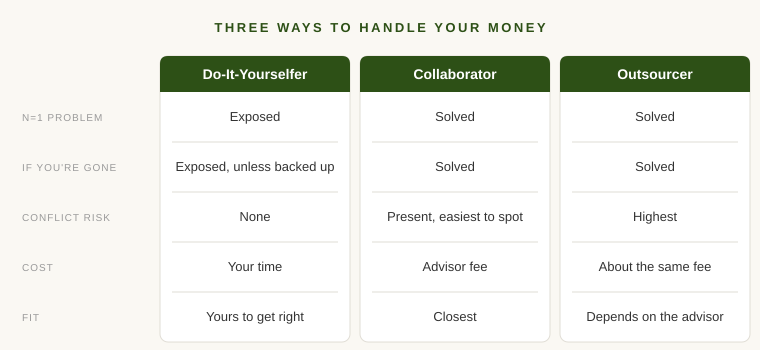

Some people tend their own yard. They like it. Saturday morning is mowing, edging, pulling weeds, and they know every bare patch by name. Some people do part of it and hire out the rest. Some hand the whole thing to a crew and never think about it again.
All three can produce a great yard. And then there's the yard nobody is tending, which you can usually spot from the street.
Money works the same way. After 16 years advising high-net-worth and ultra-high-net-worth families, I think most people fall into one of three groups when it comes to financial advice. None is the right answer for everyone. But you should be in one of them on purpose.
What an Advisor Solves, and What It Costs
Bringing in an advisor solves two problems and introduces two new ones.
The first is what I think of as the n=1 problem. If you manage your own finances, your sample size is one. Someone who has worked with hundreds of families has seen the same decision play out many times, including the ways it goes wrong.
The second is the "what happens when you're gone" problem. If you are the only person who understands your financial life, the people you love inherit not just your assets but the job of figuring them out, usually while grieving.
On the other side of the ledger, an advisor introduces conflicts. Some are paid commissions on what they sell. Some work for firms that would prefer you own their products. Even a fee-only advisor, which is how I work, has a reason to want more of your money under management. A conflict existing doesn't mean it's being acted on, and good advisors manage them carefully. But the risk is real, and it didn't exist when you were doing it yourself.
An advisor also costs money. That's obvious, but worth saying plainly, because a fee that seems small compounds over decades just like returns do.
One more variable sits across all of this: how well the plan fits you. That depends less on who does the work and more on how involved you are.

The Do-It-Yourselfer
Do-it-yourselfers manage their own money because they enjoy it, want control, or don't want to pay someone else. That can be completely fine. Someone who really pays attention can do most of this well, and some do it very well.
The DIYer has two real advantages. There's no conflict, since every decision is made by the one person whose only interest is yours. And there's no fee, though there is a cost in time that people tend to undercount.
But both problems are fully in play.
On the n=1 side, the gaps usually show up in the technical corners. A common one: a successful person tells me they have a trust, usually a revocable one. What they often never did was retitle their accounts or house into it, so those assets may go through probate anyway, which is what the trust was meant to avoid. Or the trust is fine, but nobody ever raised the planning that could come next.
Nobody is careless here. They just haven't seen it go wrong before. Someone who has would have asked the follow-up question.
The second problem can be harder. I've seen families going through a parent's house after they passed and finding paper stock certificates nobody knew existed. It's nice to find something of value. It's also a hard way to settle an estate, and for every certificate found in a desk drawer, you have to wonder how many weren't.
Some DIYers put a backup plan in place: a letter of instructions, an advisor their spouse can call, an accountant who knows where everything is. That goes a long way toward solving the second problem. It doesn't do much for the first.
The Collaborator
The second group could probably do it themselves. Many of the clients I work with have had successful careers as entrepreneurs or corporate executives. They're used to making big decisions. They've just decided this isn't how they want to spend their time.
With collaborators, the relationship goes back and forth. I bring my best ideas, they push back, and we often land somewhere better than either of us would have alone. Often it's refining a plan they already had and filling in the details.
It's a lot like working with a good contractor on your house. Surprises can always come up. But a contractor who has done this many times asks the right questions before the wall comes down, so you aren't stumbling onto ductwork or wiring you didn't know was there. The same is true for tax, legal, and some of the more technical investment issues. Honestly, that's often where an advisor earns the fee. The issues you wouldn't have known to look for are usually what justify the cost.
This group solves both problems. The advisor's experience covers n=1, someone else knows the plan if you're gone, and because the client is engaged, the result fits them closely.
The collaborator pays the fee, and in my experience gets the most for it. Collaboration is a process. It takes more of an advisor's time and effort than any other kind of relationship, and the fee is usually the same.
The collaborator also takes on the conflict risk. But they're in the best position to manage it, because they're close enough to notice when a recommendation seems to serve someone else. Collaboration only works when everyone at the table is pulling for what's best for you, and when both sides are willing to change their minds.
The Outsourcer
The third group wants someone to handle it. Tell me if things are okay, tell me if they're not, tell me what to do.
This can work well. With the right advisor, someone who takes the time to know you and what matters to you, you can get a great outcome. It solves both problems just as well as collaboration does, usually for about the same fee. An outsourcer may use less of the advisor's time, but that's not really what they're paying for. They're paying for someone to pay attention when it counts.
Conflicts are a much bigger risk here. If you aren't engaged enough to question a recommendation, you're relying entirely on your advisor's incentives lining up with yours. Before you hand over the keys, know how they get paid.
Fit can also suffer. Some of the best refinements come from a client saying "that doesn't sound like us," and an outsourcer may not say it.
To be fair, that cuts both ways. Collaboration isn't always additive. Some engaged clients second-guess good decisions or chase the idea they read about last week. An outsourcer with a good advisor sometimes ends up with a cleaner plan precisely because they aren't tinkering with it.
The Yard Nobody Tends
The real risk isn't picking the wrong group. It's not picking one at all.
Plenty of people think they're do-it-yourselfers when they're really just not doing it. The accounts were opened years ago and never looked at. The will was drafted before the kids were born. The trust exists on paper and nowhere else. These folks aren't making bad decisions. They aren't making decisions.
That shows up in the results, and in how life feels. Money that is quietly being taken care of, by you or someone you trust, frees you up to think about other things. Money nobody is tending sits in the back of your mind.
So it's worth asking honestly which group you're in. If you're a DIYer, ask whether your family could find everything tomorrow. If you're a collaborator, ask whether you're really engaged or just nodding along. If you're an outsourcer, ask whether your advisor knows what matters to you, and how they get paid. And if you can't answer which group you're in, that's your answer.
If you're weighing whether to bring someone in, I wrote about the honest case for hiring a financial advisor and what good advisors actually do.